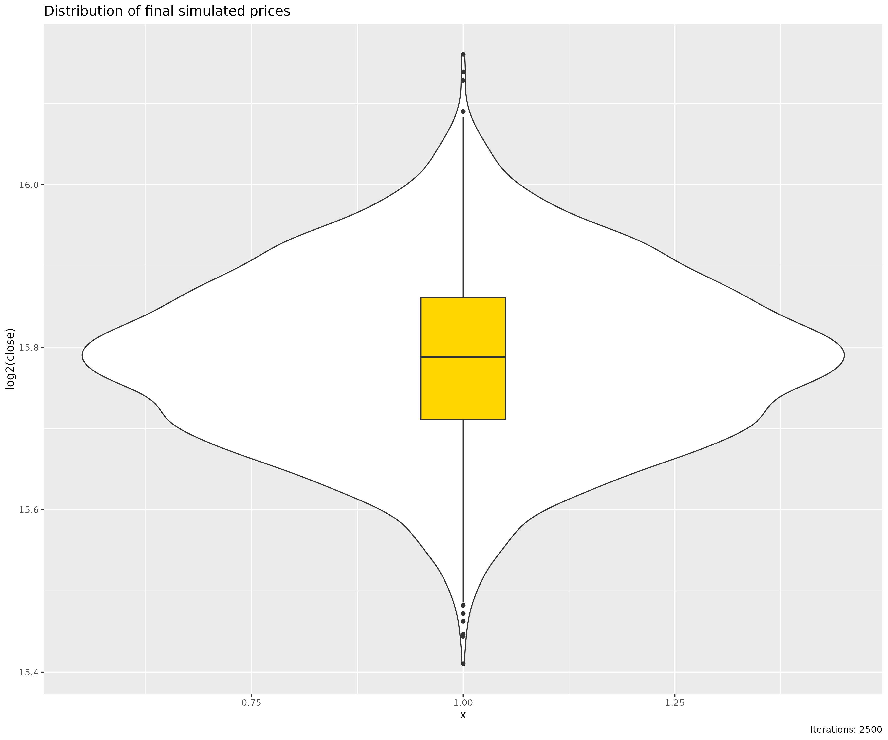
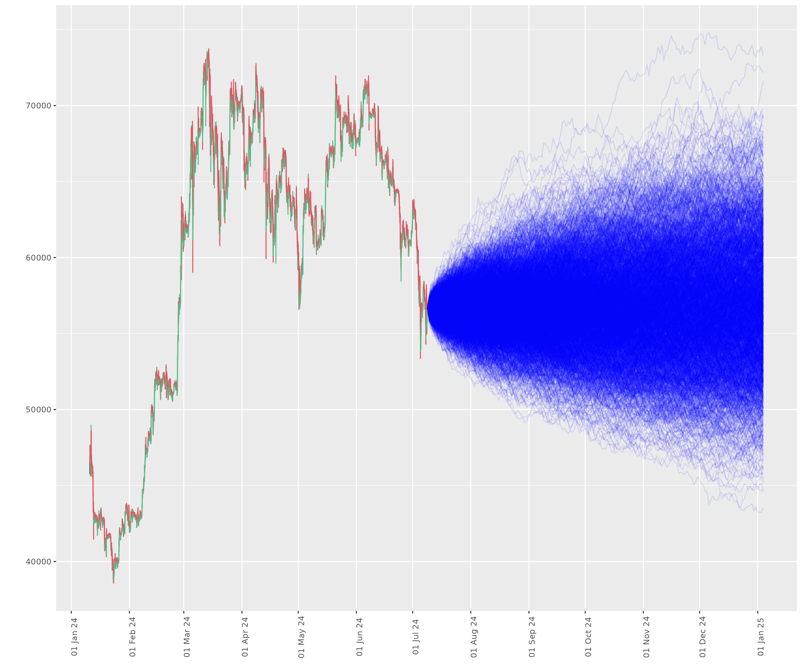

Introduction to Monte Carlo Simulations
Source:vignettes/intro-to-monte-carlo-simulations.Rmd
intro-to-monte-carlo-simulations.RmdIntroduction and History
Monte Carlo simulations, named after the famous casino in Monaco, have a rich history dating back to the 1940s. The method was developed by Stanislaw Ulam, a mathematician working on the Manhattan Project, and was named by Nicholas Metropolis, inspired by Ulam’s uncle’s interest in Monaco’s casinos. Originally used in physics to simulate neutron diffusion in fissile material, Monte Carlo methods quickly found applications in various fields, including finance.
The essence of Monte Carlo simulation lies in using random sampling to solve problems that might be deterministic in principle. In finance, this approach has become invaluable for dealing with the inherent uncertainties of markets and complex financial instruments. In bioinformatics and epidemiology, Monte Carlo simulations are used to model the spread of diseases and predict outcomes.
Licensing
The dmplot package is released under the MIT license,
allowing free use and modification. Users must:
- Cite the original author (see LICENSE for details).
- Include the license in any redistribution.
Loading Sample Data
We’ll use the same sample data as in the README:
box::use(kucoin[ get_market_data ])
ticker <- "BTC/USDT"
data <- get_market_data(
symbols = ticker,
from = "2024-01-10 22:29:26 EST", # lubridate::now() - lubridate::days(180),
to = "2024-07-08 22:29:41 EST", # lubridate::now(),
frequency = "1 hour"
)
head(data)
#> symbol datetime open high low close volume
#> <char> <POSc> <num> <num> <num> <num> <num>
#> 1: BTC/USDT 2024-01-10 22:00:00 45953.7 46943.4 45751.1 46899.4 598.19616
#> 2: BTC/USDT 2024-01-10 23:00:00 46899.4 47686.3 46381.2 46644.8 859.01764
#> 3: BTC/USDT 2024-01-11 00:00:00 46649.3 46710.4 46292.1 46675.8 264.78216
#> 4: BTC/USDT 2024-01-11 01:00:00 46675.8 46746.1 46473.4 46504.5 134.29370
#> 5: BTC/USDT 2024-01-11 02:00:00 46504.5 46621.8 46495.2 46562.9 88.37562
#> 6: BTC/USDT 2024-01-11 03:00:00 46562.8 46592.0 46210.6 46502.7 248.39038
#> 1 variable(s) not shown: [turnover <num>]What are Monte Carlo Simulations?
Monte Carlo simulations are computational algorithms that rely on repeated random sampling to obtain numerical results. In the context of finance, they’re used to model the probability of different outcomes in a process that cannot easily be predicted due to the intervention of random variables.
Uses in Finance
Monte Carlo simulations have numerous applications in finance:
- Asset Pricing: Estimating the future value of assets or portfolios.
- Risk Management: Assessing potential losses and the probability of different risk scenarios.
- Derivatives Pricing: Valuing complex derivatives, especially those with path-dependent payoffs.
- Portfolio Optimisation: Determining optimal asset allocations under various constraints and market scenarios.
- Value at Risk (VaR) Calculations: Estimating the potential loss in value of a portfolio.
- Real Options Analysis: Valuing flexibility in business and investment decisions.
Usage of dmplot’s MonteCarlo Class
This creates a new MonteCarlo object, runs 1000
simulations for 30 days into the future, and plots the resulting price
paths.
box::use(dmplot[ MonteCarlo ])
monte <- MonteCarlo$new(data, number_sims = 2500, project_days = 30 * 6)
# run Monte Carlo simulation
monte$carlo()
# the results
monte$data
#> symbol datetime open high low close volume
#> <char> <POSc> <num> <num> <num> <num> <num>
#> 1: BTC/USDT 2024-01-10 22:00:00 45953.7 46943.4 45751.1 46899.4 598.19616
#> 2: BTC/USDT 2024-01-10 23:00:00 46899.4 47686.3 46381.2 46644.8 859.01764
#> 3: BTC/USDT 2024-01-11 00:00:00 46649.3 46710.4 46292.1 46675.8 264.78216
#> ---
#> 4317: BTC/USDT 2024-07-08 20:00:00 56475.7 56572.7 56196.8 56259.4 79.02733
#> 4318: BTC/USDT 2024-07-08 21:00:00 56259.4 56828.1 56196.7 56644.7 108.76461
#> 4319: BTC/USDT 2024-07-08 22:00:00 56639.6 56968.3 56551.3 56686.5 69.18443
#> 2 variable(s) not shown: [turnover <num>, historical_returns <num>]
# the predicted prices
monte$simulation_results
#> close simulation datetime
#> <num> <int> <POSc>
#> 1: 56686.50 1 2024-07-08 22:00:00
#> 2: 56245.54 1 2024-07-09 22:00:00
#> 3: 56325.33 1 2024-07-10 22:00:00
#> ---
#> 449998: 61177.65 2500 2025-01-01 22:00:00
#> 449999: 61412.68 2500 2025-01-02 22:00:00
#> 450000: 62034.59 2500 2025-01-03 22:00:00
# the final prices of each simulation
monte$end_prices
#> close simulation datetime
#> <num> <int> <POSc>
#> 1: 58752.41 1 2025-01-03 22:00:00
#> 2: 64224.74 2 2025-01-03 22:00:00
#> 3: 52629.32 3 2025-01-03 22:00:00
#> ---
#> 2498: 51928.20 2498 2025-01-03 22:00:00
#> 2499: 55719.03 2499 2025-01-03 22:00:00
#> 2500: 62034.59 2500 2025-01-03 22:00:00Visualisation
dmplot provides several visualisation methods to help
interpret the results.
Below we plot the simulated price paths:
monte$plot_prices()
We can also visualise the distribution as violin plots these help us understand the range of possible outcomes and the distribution of final prices:
monte$plot_distribution()
Finally, we can combine historical data with the simulations to see how the modelled scenarios compare to reality:
monte$plot_prices_and_predictions()
These visualisations can provide insights into the range of possible outcomes and the likelihood of different scenarios.
Implementation and design
The basic steps for implementing a Monte Carlo simulation in finance are:
- Define the parameters and inputs of the model.
- Generate random scenarios based on the input parameters.
- Calculate the outcome for each scenario.
- Aggregate the results of all scenarios.
- Analyse the distribution of outcomes.
Our package makes this process extremely accessible and a three step
process through the MonteCarlo R6 class:
- Create a new
MonteCarloobject with historical price data. - Run the simulation with the desired number of simulations and projection days.
- Visualise the results using the provided plotting methods.
monte <- MonteCarlo$new(
data,
number_sims = 2500,
project_days = 30 * 6
)
monte$carlo()
monte$plot_prices()Mathematics of Monte Carlo Simulations in Finance
The core of Monte Carlo simulations in finance is often based on the assumption that asset prices follow a geometric Brownian motion, described by the stochastic differential equation:
\[ dS = μSdt + σSdW \]
Where:
- S is the asset price
- μ is the drift (expected return)
- σ is the volatility
- dW is a Wiener process
In discrete time, this can be approximated as:
\[ S(t+Δt) = S(t) * exp((μ - 0.5σ²)Δt + σ√Δt * ε) \]
Where ε is a standard normal random variable.
Our implementation uses this formula to generate price paths, with the daily volatility estimated from historical data.
Best Practices and What Not to Do
While Monte Carlo simulations are powerful, they should be used carefully:
- Do: Understand your inputs. The quality of your simulation depends heavily on the quality of your input parameters.
- Don’t: Rely solely on historical data for parameter estimation. Past performance doesn’t guarantee future results.
- Do: Run a sufficient number of simulations. More simulations generally lead to more accurate results, but there’s a trade-off with computational time.
- Don’t: Ignore the limitations of your model. All models are simplifications of reality.
- Do: Validate your model against real-world data when possible.
- Don’t: Forget about extreme events. Standard models often underestimate the probability of extreme events.
Monte Carlo Simulation Implementation Details
C++ implementation algorithm explanation
The core of our Monte Carlo simulation is implemented in C++ for
optimal performance. Let’s break down the monte_carlo
function:
Rcpp::List monte_carlo(double seed_price, double daily_vol, int num_sims, int num_days) {
int total_rows = num_sims * num_days;
Rcpp::NumericVector close(total_rows);
Rcpp::IntegerVector sim_idx(total_rows);
Rcpp::NumericVector end_price(num_sims);
Rcpp::IntegerVector end_idx(num_sims);
int row_index = 0;
for (int i = 0; i < num_sims; ++i) {
double current_price = seed_price;
for (int j = 0; j < num_days; ++j) {
current_price *= (1 + R::rnorm(0, daily_vol));
close[row_index] = current_price;
sim_idx[row_index] = i + 1;
++row_index;
}
end_price[i] = current_price;
end_idx[i] = i + 1;
}
Rcpp::DataFrame sim_df = Rcpp::DataFrame::create(
Rcpp::_["close"] = close,
Rcpp::_["simulation"] = sim_idx
);
Rcpp::DataFrame end_df = Rcpp::DataFrame::create(
Rcpp::_["close"] = end_price,
Rcpp::_["simulation"] = end_idx
);
return Rcpp::List::create(
Rcpp::_["simulations"] = sim_df,
Rcpp::_["end_prices"] = end_df
);
}Initialisation: We create vectors to store the simulated prices (
close), simulation indices (sim_idx), final prices (end_price), and final simulation indices (end_idx).Simulation Loop: We iterate
num_simstimes, each representing a complete price path.Price Path Generation: For each simulation, we start with the
seed_priceand generatenum_daysof price movements.-
Daily Price Movement: Each day’s price is calculated using the formula:
This implements a geometric Brownian motion, where:
-
R::rnorm(0, daily_vol)generates a random number from a normal distribution with mean 0 and standard deviationdaily_vol. - Multiplying by
(1 + ...)ensures the price changes proportionally.
-
Data Storage: We store each day’s price and its corresponding simulation index.
-
Results Compilation: After all simulations, we create two data frames:
-
simulations: Contains all simulated prices and their corresponding simulation indices. -
end_prices: Contains only the final price of each simulation path.
-
Implementation Notes
- We use Rcpp’s random number generator (
R::rnorm) for consistency with R’s random number generation. - The function is optimised for speed by pre-allocating memory for all results and using as few loops as necessary for all calculations.
- The results are returned as
Rdata.framesfor easy integration withRcode.
R6 Class Implementation
The MonteCarlo R6 class provides a
user-friendly interface for running Monte Carlo simulations and
analysing the results. Here’s an overview of its structure and
functionality:
The MonteCarlo class is organised into three main
sections:
- Private fields and methods: These handle internal data validation and preparation.
- Active bindings: Provide access to simulation results.
- Public fields and methods: Allow users to configure, run, and visualise simulations.
Some of the key components are:
-
Data Preparation: The
preparemethod calculates historical returns and volatility from the input data. -
Simulation Execution: The
carlomethod calls the C++monte_carlofunction and processes the results. -
Visualisation: Three methods
(
plot_prices,plot_distribution,plot_prices_and_predictions) provide different ways to visualise the simulation results.
Here’s a quick overview of the public methods available in the
MonteCarlo class:
#' Monte Carlo Simulation R6 Class
#'
#' @description
#' An R6 class for performing Monte Carlo simulations on financial time series data.
#' This class provides methods for data preparation, simulation execution, and result visualization.
#'
#' @details
#' The MonteCarlo class uses historical price data to calculate volatility and perform
#' Monte Carlo simulations for future price movements. It leverages the C++ implementation
#' of the Monte Carlo algorithm for efficiency.
#'
#' @field data A data.table containing the historical price data.
#' @field simulation_results A data.table containing the results of the Monte Carlo simulation.
#' @field end_prices A data.table containing the final prices from each simulation path.
#' @field log_historical Logical. Whether to use log returns for historical volatility calculation.
#' @field number_sims Integer. The number of simulation paths to generate.
#' @field project_days Integer. The number of days to project into the future.
#' @field start_date POSIXct. The start date for the simulation (last date of historical data).
#' @field verbose Logical. Whether to print progress messages.
#'
#' @export
MonteCarlo <- R6::R6Class(
"MonteCarlo",
private = list(
validate_data = \()
prepare = \(log_historical = FALSE)
seed_price = NA_real_,
daily_vol = NA_real_
),
active = list(
#' @field results A list containing simulation results and end prices.
results = \()
),
public = list(
data = NULL,
simulation_results = NULL,
end_prices = NULL,
log_historical = FALSE,
number_sims = 1000,
project_days = 30,
start_date = NULL,
verbose = FALSE,
#' @description
#' Create a new MonteCarlo object.
#' @param dt A data.table containing historical price data.
#' @param log_historical Logical. Whether to use log returns for historical volatility calculation.
#' @param number_sims Integer. The number of simulation paths to generate.
#' @param project_days Integer. The number of days to project into the future.
#' @param verbose Logical. Whether to print progress messages.
initialize = \(dt, log_historical = FALSE, number_sims = 1000, project_days = 30, verbose = FALSE)
#' @description
#' Run the Monte Carlo simulation.
carlo = \()
#' @description
#' Plot the simulated price paths.
#' @return A ggplot object showing the simulated price paths.
plot_prices = \()
#' @description
#' Plot the distribution of final prices.
#' @return A ggplot object showing the distribution of final prices.
plot_distribution = \()
#' @description
#' Plot historical prices and simulated future prices.
#' @return A ggplot object showing historical and simulated prices.
plot_prices_and_predictions = \()
)
)Performance Considerations
Monte Carlo simulations can be computationally intensive, especially
with a large number of simulations or complex models. Our package
addresses this by implementing the core simulation logic in
C++ via Rcpp. This results in significantly
faster execution compared to pure R implementations.
Conclusion
Monte Carlo simulations are a powerful tool in the financial analyst’s toolkit. They allow us to model complex, real-world systems and make probabilistic forecasts. However, they should be used judiciously, with a clear understanding of their assumptions and limitations.
Our package aims to make these sophisticated techniques accessible and efficient, allowing analysts to focus on interpreting results rather than implementation details.
Remember, while Monte Carlo simulations can provide valuable insights, they are not crystal balls. They are tools to help inform decision-making, not to predict the future with certainty.